FEATURED / TASDID
Make the bill understandable.
Container work, the Tasdid+ mini-app, billing, invoicing, inquiry, and payment states. The screenshots below walk through the actual Tasdid interface.
Inside Tasdid ↘CASE FILE 02 · QI CARD / SUPERQI · FINTECH
All Qi work ↘ Tasdid screens (12) ↘
My work at Qi reaches across products people use and the tools that keep operations running.
I work across Tasdid, Jabi, oil stations, AML dashboards, service-provider mini-apps, Qi Hawala, KRG / e-Psule, Bismayah, and native DSL. Some of that work lives inside SuperQi’s Alipay mini-app ecosystem. Some lives in operational web applications.
Tasdid and Jabi are the two projects I highlight here. The full collection below includes the other products and systems I’ve worked on at Qi.
Tasdid & Jabi first. The full range underneath.
FEATURED / TASDID
Container work, the Tasdid+ mini-app, billing, invoicing, inquiry, and payment states. The screenshots below walk through the actual Tasdid interface.
Inside Tasdid ↘FEATURED / JABI
Jabi and Jabi+ span payment flows and merchant finance: statements, salaries, supplier payments, and export. The native DSL port takes the H5 experience into a different runtime.
Jabi, Jabi+, and DSL ↘Operational web application
Station management, transactions, and weekly reports.
Internal dashboard
Anti-money-laundering dashboard work.
SuperQi mini-app
Provider selection, bill inquiry, receipts, and payment screens.
Remittance mini-app
The remittance experience, transaction history, details, and receipts.
Shared mini-app experience
Container and navigation work around the Tasdid experience.
Billing & invoicing
The billing and invoicing product inside the SuperQi ecosystem.
Product mini-app
Jabi mini-app work, including its payment and result screens.
Merchant finance
Statements, salaries, supplier payments, and Excel export from a phone.
Regional billing
Kurdish, Arabic, and English billing, alongside KRG dashboard work.
Housing-loan mini-app
Housing-loan requests, document submission, review, and guarantee consent.
Native mini program
The native DSL port of the Jabi+ H5 experience for QiNeo / Alipay Plus.
One representative flow from the billing mini-app work.
USER ──▶ TASDID+ (Svelte mini-app) ──▶ SuperQi / Alipay runtime ──▶ Billing APIs │ │ │ cache · progressive loading ├──▶ provider A (fast) │ skeleton → partial → complete ├──▶ provider B (slow) ▼ └──▶ provider N (flaky) invoice normalized │ ▼ payment method (wallet · tokenized card) │ ▼ TRANSACTION STATE MACHINE initiated → pending → authorized → confirmed │ ├──▶ failed (provider-specific message) └──▶ retry (no double-charge: idempotent)
The app can crash, reload or lose the network and still recover. It never invents a payment result. The state machine owns that truth.
Svelte gave us a small bundle and fast cold start. That mattered more than framework preference.
Providers answer at different speeds. The screen fills in as responses arrive instead of waiting for the slowest one.
A timeout, invalid account and provider outage are different problems. The user gets a useful message for each one.
For many merchants, the phone is the whole back office. Jabi+ keeps large datasets usable on a small screen and still exports to Excel when the accountant needs it.
Promoted to Senior Software Engineer in March 2026. Independently retained by five startups to integrate the same payment rails.
Distinct state with its own copy and retry path; the rest of the screen keeps working.
The UI says pending. It never guesses success. The final answer comes from the source of truth.
Transaction state machine unwinds cleanly; no orphaned intents.
Cache serves the last known state instantly; the network upgrades it when it can.
Actual Tasdid mini-app screens from its existing demo mode. Names, accounts, phone numbers, and amounts are fictional. These screenshots show Tasdid specifically; the other Qi products are listed individually above.
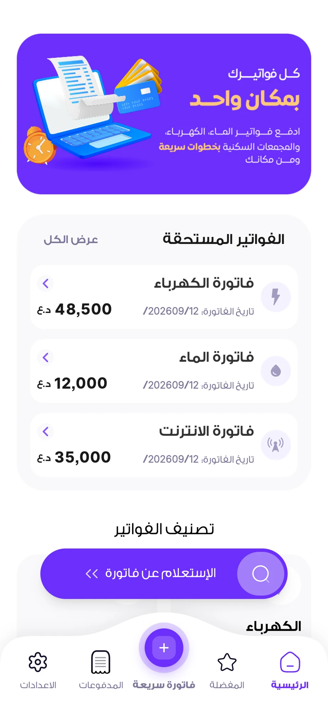
The Tasdid home gathers account context and financial actions.
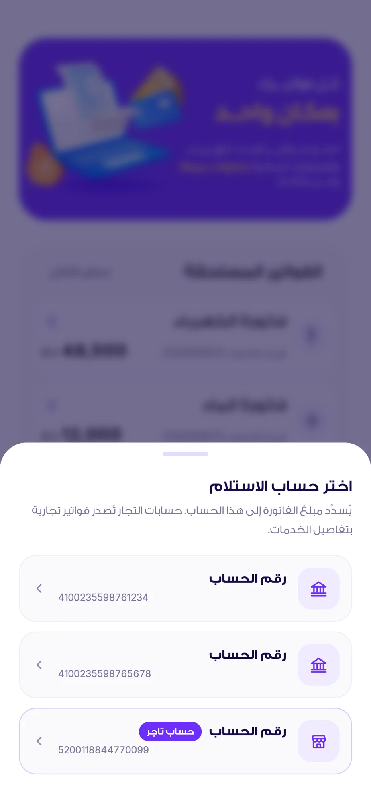
The action sheet makes the account choice explicit.
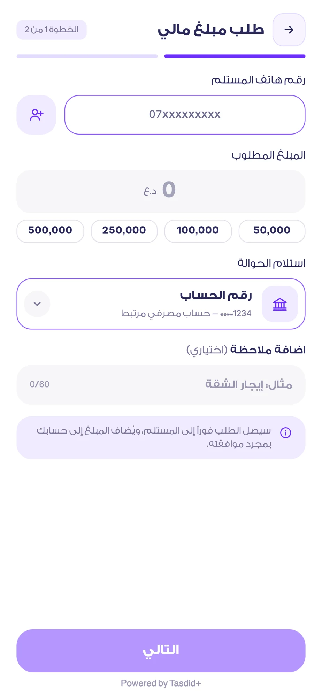
Recipient, amount, and reference fields stay in a single flow.
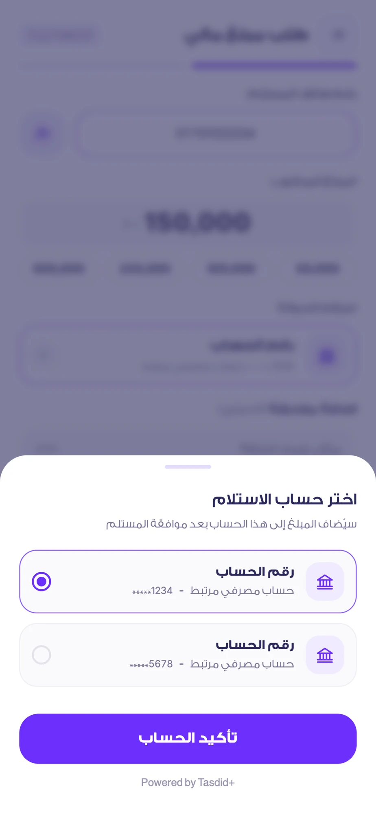
A picker exposes available accounts in context.
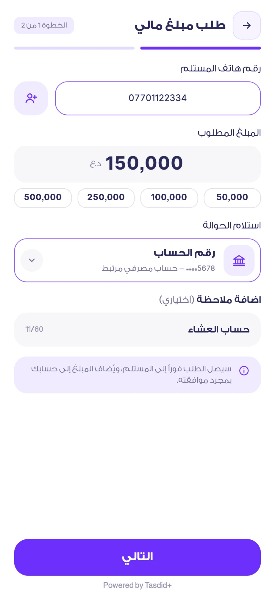
A filled form shows the values before the confirmation step.
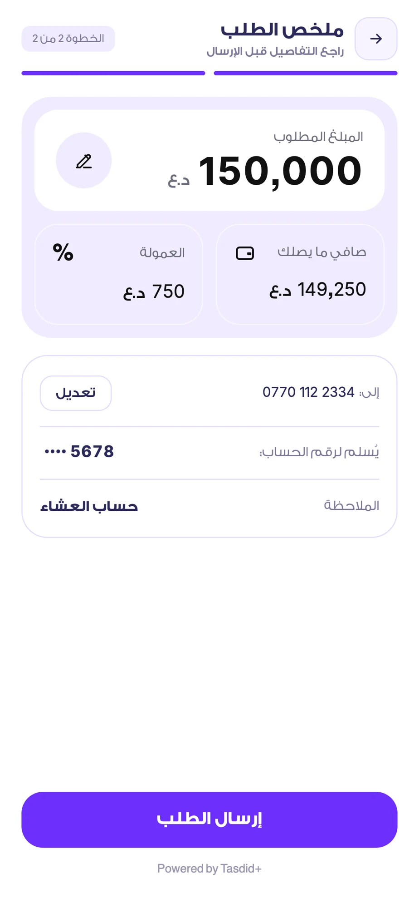
The summary collects the recipient, amount, fees, and resulting total.
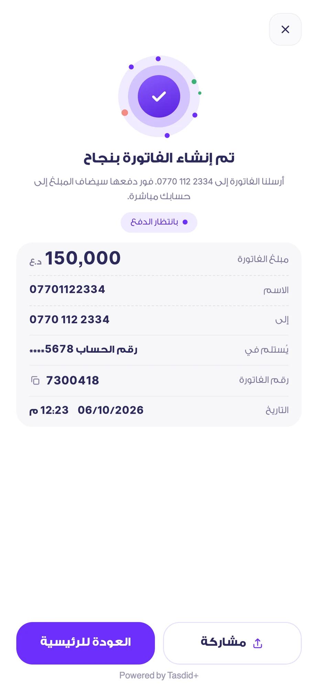
The result screen names the successful state and keeps the receipt available.
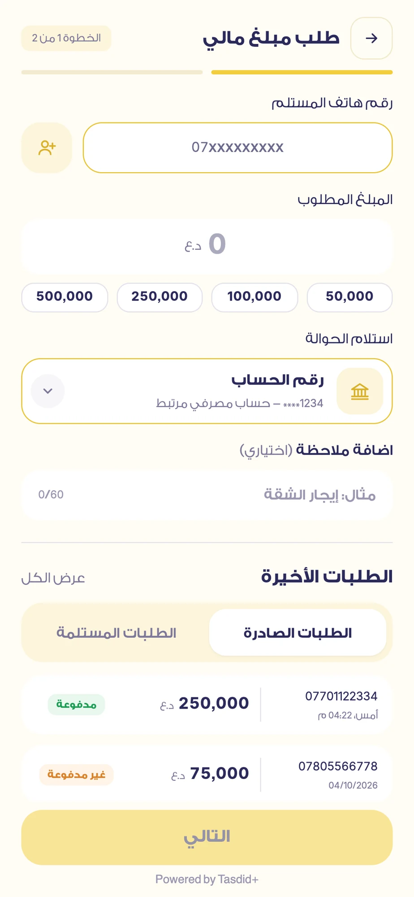
The request experience uses a different visual context from paying a bill.
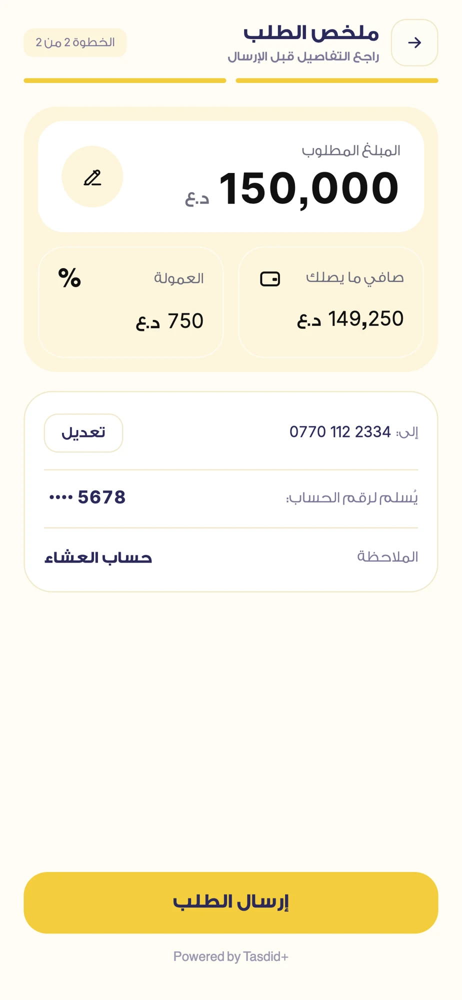
A dedicated summary lets the sender check a request before sending it.
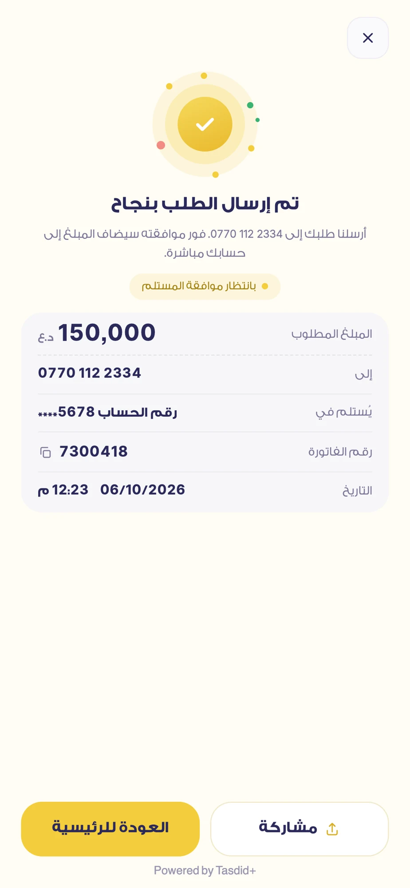
The result closes the request flow with an explicit state.
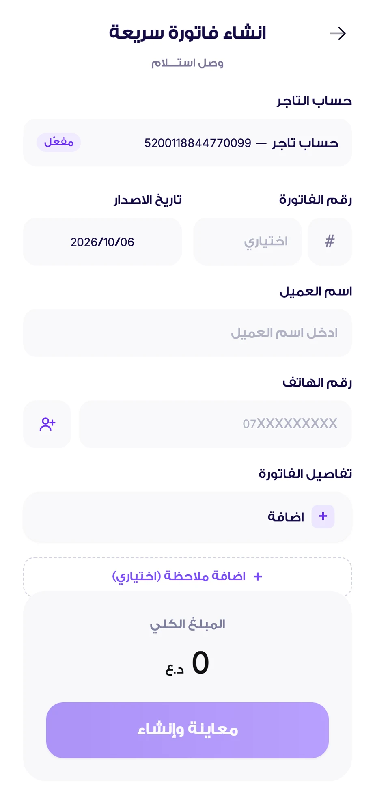
Merchant billing has its own form and service context.
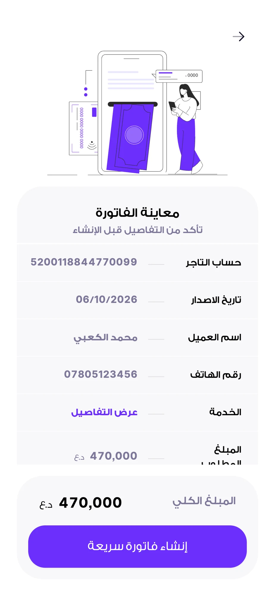
The preview lets a merchant review the invoice layout and total.
Payments are better when they are boring. Clear states, small bundles and careful reviews make that possible.
I would define a shared latency budget for every provider before product design starts. Then each new mini-app would inherit the same progressive-loading behaviour instead of deciding it again.